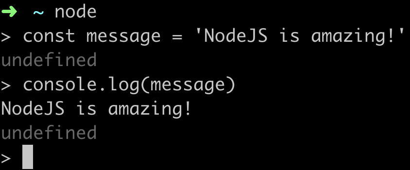
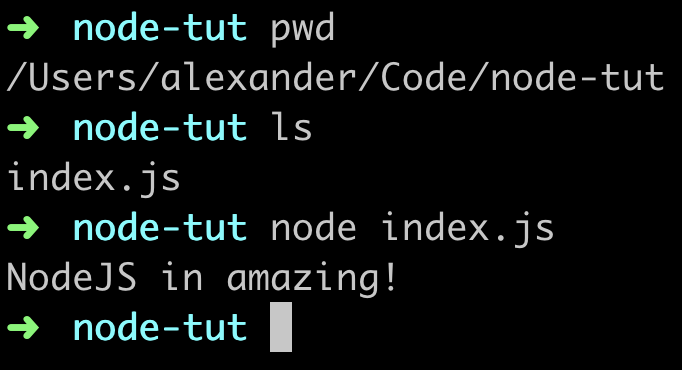

Node.js
Node.js - легке та ефективне середовище виконання JavaScript. Дозволяє писати високопродуктивні серверні застосунки та інструменти. Node.js побудована на JavaScript-рушію V8 і написана на C++.
Спочатку Node.js створювалася як серверне оточення для застосунків, але розробники почали використовувати її для створення інструментів, які допомагають автоматизувати виконання локальних завдань. В результаті нова екосистема інструментів, яка виникла навколо Node.js, призвела до трансформації процесу фронтенд-розробки.
Встановлення
Щоб встановити останню стабільну версію, перейдіть на офіційну сторінку , завантажте LTS-інсталятор і дотримуйтесь вказівок. Існують інсталятори для всіх популярних операційних систем - Windows, MacOS і Linux.
ЦІКАВО: Користувачам Windows необхідно вибрати чекбокси для встановлення всіх додаткових інструментів, крім Chocolatey. Це встановить Python і різноманітні допоміжні утиліти і компілятори.
Після встановлення в терміналі буде доступна команда node. Щоб переконатися, що встановлення пройшло успішно, перевірте версію, запустивши в консолі команду node з прапорцем version.
node --version
JavaScript поза браузером
Node.js дозволяє виконувати JavaScript-код поза браузером. Відкрийте будь-який термінал і виконайте команду node, запуститься REPL (read-eval-print loop) - інтерактивне середовище виконання JS-коду. Виведемо щось в консоль.
ЦІКАВО: Для того, щоб вийти з REPL, натисніть комбінацію Ctrl + C на Windows і Control + C на MacOS.
Тепер створимо папку node-tut, а в ній - файл index.js з кодом, який ми писали в REPL. Для запуску потрібно відкрити термінал і перейти в папку node-tut, в якій лежить index.js.
// index.js const message = "NodeJS in amazing!"; console.log(message);
Тепер в консолі запускаємо файл за допомогою команди node index.js і отримуємо такий самий результат - виведення рядка безпосередньо в терміналі.
В цьому і полягає суть Node.js - можливість виконувати JavaScript поза браузером. Таким чином можна писати цілі застосунки, наприклад, бекенд або утиліти, що не залежать від браузера.